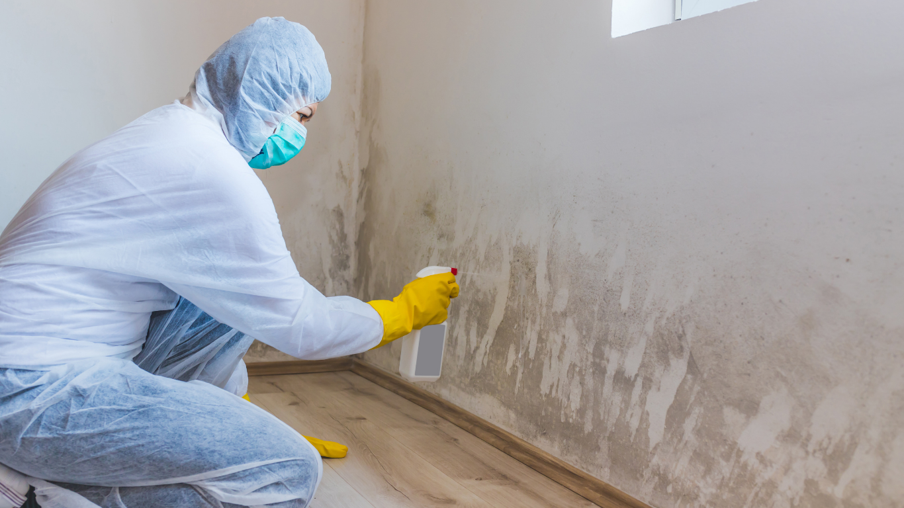

We provide professional mold remediation services that help homeowners identify hidden moisture problems, remove contamination safely, and restore healthy indoor conditions quickly.
Discovering mold inside your home can quickly become stressful, especially when you are unsure who to contact for reliable help. Mold often spreads behind walls, beneath flooring, and inside insulation long before it becomes fully visible. Knowing who to call for mold removal near me searches helps homeowners act faster, reduce damage, and avoid long-term indoor air quality concerns.
Many homeowners attempt to clean mold themselves using household cleaners or surface treatments. While small spots on non-porous surfaces may appear manageable, larger contamination often extends beyond what is visible. Simply wiping away discoloration rarely addresses the moisture source feeding the growth.
Professional remediation focuses on identifying hidden contamination and preventing spores from spreading during cleanup. Restoration specialists use containment barriers, air filtration systems, and moisture detection equipment to remove mold safely and thoroughly.
Without proper remediation, mold may continue spreading behind walls or under flooring even after visible areas appear clean. Professional mold remediation services help ensure the source of the issue is fully addressed rather than temporarily covered up.
Mold problems are not always obvious at first. Some homeowners notice musty odors or allergy-like symptoms before seeing visible growth. Because mold thrives in damp, enclosed spaces, hidden contamination can develop for weeks or months before discovery.
Common warning signs include:
Homes that have experienced plumbing leaks, storm damage, or flooding are especially vulnerable to hidden mold problems. Fast inspection helps limit structural damage and reduces remediation costs over time.
Professional mold removal begins with a detailed inspection to locate affected areas and identify the moisture source causing contamination. Moisture mapping and thermal imaging often reveal hidden damage behind walls or beneath flooring.
Once the scope of contamination is determined, technicians install containment barriers to isolate the affected space. HEPA air filtration systems help prevent airborne spores from spreading throughout the home during cleanup.
Porous materials such as drywall, carpeting, or insulation may need removal if mold has penetrated deeply into them. After removal, industrial drying equipment eliminates trapped moisture before restoration begins. In many cases, mold remediation also includes water damage restoration because unresolved moisture is often the root cause of contamination.
When searching for mold removal near you, experience and response time matter. Mold can spread quickly when moisture remains untreated, making fast professional response especially important.
Homeowners should look for restoration companies that provide:
Choosing a company that handles both remediation and rebuilding often creates a smoother experience because homeowners avoid coordinating multiple contractors during restoration.
Reviews, certifications, and local experience also help homeowners feel more confident when selecting a remediation team.
One of the biggest misconceptions about mold cleanup is that removing visible growth solves the problem permanently. In reality, mold returns quickly if moisture issues remain unresolved.
Leaks behind walls, roof damage, plumbing failures, poor ventilation, and humidity problems all create conditions that support recurring mold growth. Successful remediation focuses heavily on moisture detection and drying to prevent contamination from returning after cleanup.
Bathrooms, attics, laundry rooms, and crawl spaces are common areas where hidden moisture accumulates. Professional restoration services help identify these underlying issues before they cause additional structural damage.
Indoor air quality is usually one of the biggest concerns once mold is discovered. Many families worry about odors, respiratory irritation, and long-term exposure, especially when young children, older adults, or individuals with sensitivities are involved.
Homeowners also want to know how extensive the damage may be. Small visible patches sometimes indicate larger hidden contamination behind walls or beneath flooring. Professional inspections provide clarity about the true scope of the issue and what steps are necessary for safe cleanup.
Another major concern is how long remediation will take. Smaller projects may only require a few days, while larger contamination involving structural drying and reconstruction can take longer. Fast action usually shortens timelines significantly.
Delaying remediation allows moisture and contamination to continue spreading throughout the property. Over time, mold can weaken drywall, flooring, wood framing, and insulation, increasing repair costs substantially.
Hidden mold may also spread into HVAC systems, circulating spores throughout the home and affecting indoor air quality in multiple rooms. According to the Environmental Protection Agency, controlling indoor moisture is one of the most important steps in preventing mold growth and maintaining healthier indoor environments.
Acting quickly after discovering mold often prevents more extensive restoration later.
Mold problems rarely improve on their own. Safe and effective remediation requires proper containment, moisture removal, air filtration, and restoration planning to fully address the source of contamination.
If you’re looking for trusted help with mold removal near me in North Texas, SWAT Restoration provides professional mold remediation, water damage cleanup, and reconstruction services throughout the Fort Worth area. Our team responds quickly, identifies hidden moisture problems, and restores affected spaces with clear communication from start to finish. When mold threatens your property, experienced restoration professionals help protect both your home and your indoor air quality.